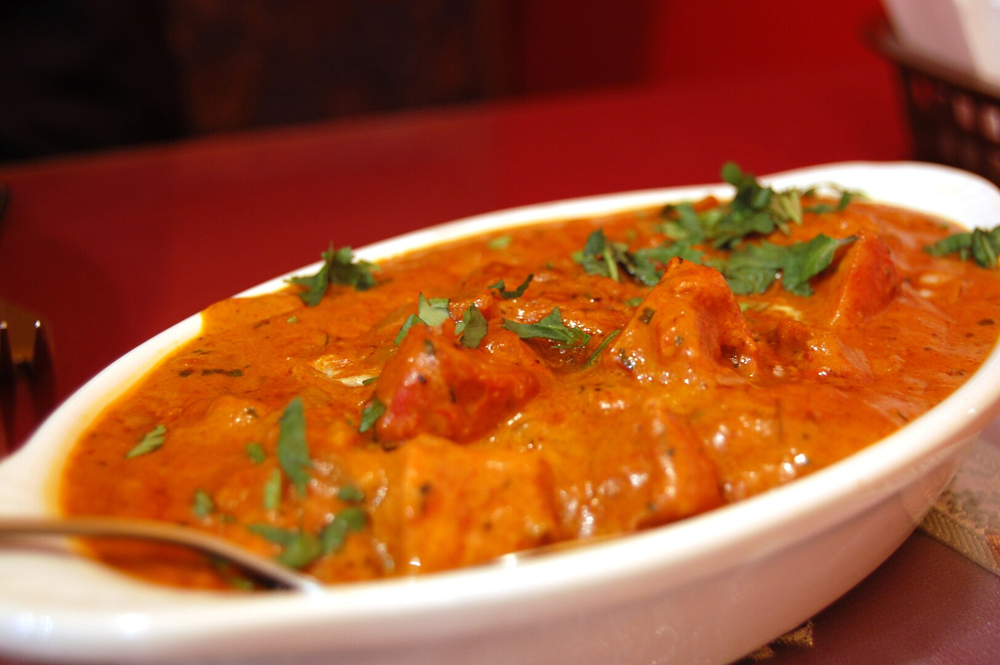

Butter Chicken

About Butter Chicken
Butter chicken, also known as Murgh Makhani, is a beloved dish originating from India. It's believed to have been created in the 1950s at Moti Mahal restaurant in Delhi. The story goes that leftover tandoori chicken was combined with a rich tomato-based gravy, resulting in this delectable creation.
The dish features marinated chicken cooked in a creamy tomato sauce, flavored with spices like garam masala, cumin, and coriander.
Ingredients:
Chicken marinade Ingredients:
- Boneless Chicken
- Yogurt
- Lemon juice
- Ginger-Garlic paste
- Garam masala
- Cumin powder
- Coriander powder
- Tumeric powder
- Kashmiri chili powder
- Salt
Curry Ingredients:
- Butter
- Ghee
- Onion
- Ginger-Garlic paste
- Tomatoes
- Cashews
- Cumin powder
- Red chili powder
- Turmeric powder
- Kasuri methi
- Heavy cream
- Cream
Baking Steps
- Marinate the Chicken: Combine yogurt, lemon juice, ginger-garlic paste, garam masala, cumin powder, coriander powder, turmeric powder, Kashmiri chili powder, and salt. Marinate the chicken in this mixture for at least 2 hours, or preferably overnight.
- Cook the Chicken: Grill or bake the marinated chicken until it's cooked through and slightly charred.
- Prepare the Sauce: Heat butter and ghee in a pan. Add chopped onions and sauté until golden brown. Add ginger-garlic paste and cook for a few more minutes. Add tomatoes (fresh, canned, or puree) and cook until the mixture is smooth and the oil separates.
- Blend the Sauce: Blend the tomato mixture to a smooth sauce. If using cashews, blend them into the sauce for added richness.
- Cook the Sauce: Return the blended sauce to the pan. Add garam masala, cumin powder, coriander powder, red chili powder, turmeric powder, and kasuri methi. Cook until the flavors are well combined and the oil separates.
- Add the Chicken: Add the cooked chicken pieces to the sauce and coat them evenly.
- Cream it Up: Add heavy cream and butter to the sauce. Stir well until the sauce is creamy and smooth.
- Serve: Garnish with fresh coriander leaves and serve hot with naan or rice.